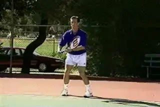
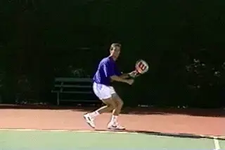
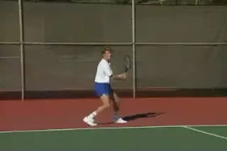

Previous: Court Movement: The Forehand | 🏠 Footwork Home | Next: Lateral and Forward Movement
Court Movement: The Backhand
Comprehensive unified tennis knowledge base — Fundamentals, Stroke Analysis, Reference Library, and more
Court Movement: The Backhand
Bob Hansen
Tennis is a game of movement, and movement is just as important on the backhand as on the forehand. But the backhand movement patterns are probably less well understood than the forehand by many players.
Whether you hit with one hand or two, effective movement means understanding the first move, how to move out and set up behind the ball, and the best method for efficient recovery.
In fact, the patterns of movement to the hit and the recovery are almost identical for the backhand as for the forehand.
Although more forehands are probably hit with open stance, it is equally important to be able to hit open stance on the backhand side. This is true for both the one hander and the two-hander.

The first move, the set up, and recovery are the same on the backhand as the forehand.
The Initial Move
For the backhand, start in a good, balance ready position, with your feet spread a little more than shoulder width, the knees flexed, and the body upright.
The initial move begins with a push with the Inside Foot and, at the same time, a step with the Outside Foot toward the ball.
Again, the push is with the Inside Foot. The step to the ball is with the Outside Foot.
For a righthander, the Outside Foot on the backhand is the left foot, closest to the ball. The Inside Foot is the right foot, further away from the ball.

The Initial Move positions you to hit, and also to move.

Gauge your distance and position to the ball with the Outside Foot.
Alignment
The Initial Move positions the player to hit, and more importantly, to move to the ball.
As with the forehand, the running style to the ball should be smooth and relaxed. Maintain a balanced posture.
This allows for effective sighting of the ball, proper alignment, and the ability to change directions quickly.
As you move, gauge the distance and position to the ball with the Outside Foot. Just as with the forehand, you should align the Outside Foot behind the line of the flight of the ball.

Two Options
Once I am aligned behind the ball, as was the case with the forehand, I have two options for my hitting stance. I can step forward into the line of the shot with my right foot as I hit.
I can also hit effectively off the outside foot, keeping the stance open. If you watch players like Roger Federer, you will see that the open stance has become more and more common on the one-handed backhand at the highest levels of the game.
Once you are aligned behind the ball, you can step into the backhand or hit open stance.

To recover, exchange the Outside Foot with the Inside Foot, and shuffle back smoothly and with good balance.
Recovery
Skilled recovery allows you to get back into position for the next ball as efficiently as possible the fewest possible steps.
Again, your goal is to return to the center of your opponent's possible angles and re-establish a good ready position before he hits.
The key to an efficient recover is to exchange the position of the feet after the hit. Watch how the outside foot comes back and replaces the inside foot.
This is followed by shuffling back to the middle. Your feet should brush the court, your movement is smooth and rhythmic with no jumping.
The goal is to re-establish the ready position prior to the opponent's hit. Now you can move with equal ease to reach a ball in either direction. There is no wasted motion, so I can stay ahead or gain ground in the point, or make up ground when I’m behind.
Setting up with the outside foot means I have gone no further than is necessary to hit. The recovery exchange means that in the very next step I have begun to prepare for the next ball.

The key elements of good movement are the same for the two-handed backhand. The Initial Move, the Set Up Behind the Ball, and the Recovery Exchange.
Two - Handed Backhand
The movement pattern is exactly the same for the two-handed backhand. The first component is the Initial Move. Again, this is a push with the inside foot and a step with the outside foot.
This is followed by the movement out to and behind the ball. Again, two-handed players should align behind the ball on the outside foot.
From this position two-handers have the same two stance options. They can step into the line of the shot. Or they can hit open stance. All great players hit with both stances at different times, depending on court position and circumstance.
This is followed of the recovery exchange. The player exchanges the position of the feet. He then shuffles back toward the middle of the court.

Aligning behind the ball allows you to hit open stance, similar to top pro players.
Open Stance
Aligning behind the ball gives two-handers the option of hitting open stance. This is exactly analogous to the forehand. The open stance two-hander was once regarded as unorthodox. Today trhere is not a single top player that does not use the open stance.
This includes Andre Agassi, Lleyton Hewitt, Serena Williams and Maria Sharapova. Venus Williams, who has one of the best two-handers in tennis, hits almost all of them from an open stance.
In the next article we will look at footwork on The Volley.

Bob Hansen is the long time mens varsity coach at the University of California at Santa Cruz, where he has lead his beloved Banana Slugs to 4 NCAA Division 3 national titles.
He is also the director of the Nike Tennis Camp at Santa Cruz, where he has helped develop hundreds of high school and ranked junior players. Hansens innovative theories of court movement were ahead of the curve in tennis coaching, and are widely recognized as an important contribution to understanding footwork in the modern game.
Source: tennisplayer.net archive — Court Movement - The Backhand.docx (John Yandell teaching library, 2002-2022). Extracted and rendered as HTML for Tennis Future Lab.